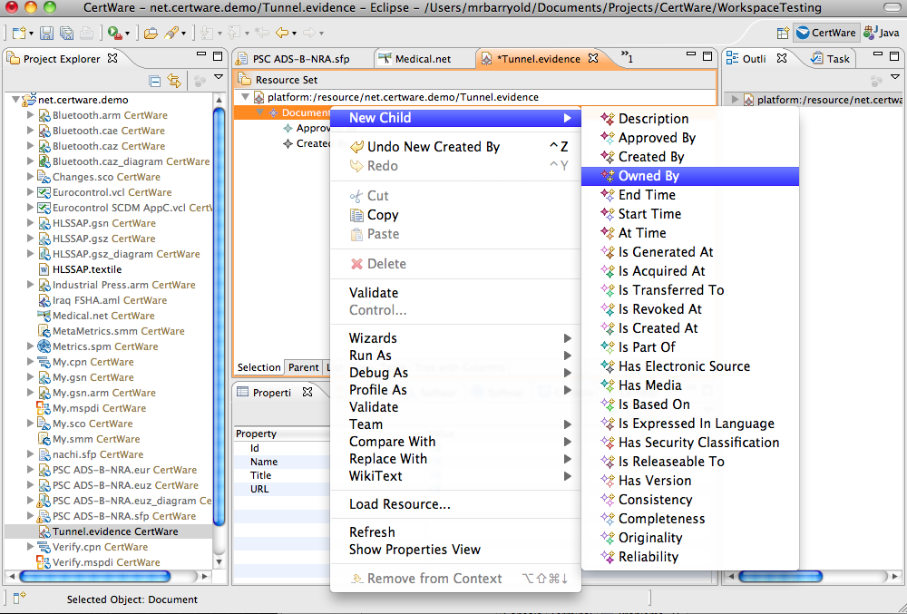

References
- Documents
- Object Management Group Software Assurance Evidence Metamodel, in process version.
Software Assurance Evidence Metamodel Evidence
The software assurance evidence metamodel (SAEM) is an OMG-provided standard that CertWare uses as the basis for more specific evidence models (see also the companion ARM metamodel). As described in the OMG specification (see reference at left):
In the simplest form, evidence consists of a collection of documents that provide evidentiary support to a set of claims. These claims are called subject claims, as the are made by an argument related to some selected subject area. We will differentiate subject claims from evidence claims, which are claims about the evidence items that help establish the exact nature of the evidentiary support they provide to subject claims in a crea, comprehensive and defensible way. Evidence arguments are reused as opposed to subject domain claims and arguments, which are specific to each subject domain. The evidence vocabulary describes claims made about evidence. Evidence vocabulary is reused in every argument for various diverse domains.
CertWare intends to build specific evidence model types derived from this metamodel, but no such models have yet been implemented. The analyst can, nonetheless, produce evidence models directly in SAEM. CertWare provides only a text-based structured tree owing to little containment usage in the metamodel.
The text-based editor is shown in the figure.
